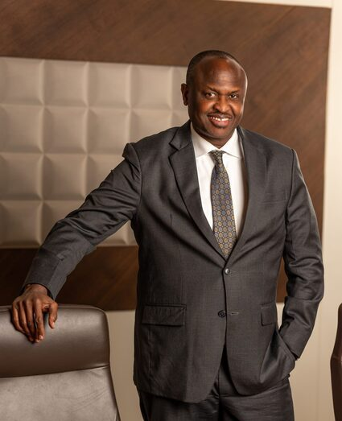

Ernest Nadome holds a Master of Arts (MA) in Labour Management Relations(UON), Bachelor of Arts (B.A) Degree (Hons(UoN).
He is the General Secretary of the Kenya Electrical Trades & Allied Workers Union (KETAWU) a position he has held for the past 17years.
He is well versed in energy, human resources, social protection and labour matters, having worked for The Kenya Power and Lighting Company Ltd and Kengen for 16 years.
He is the Chairman of the Board of Trustees for the DC Fund and also Chairman of the Board of Trustees for the Kengen Company Limited Staff Retirement Benefits Scheme (DC Scheme)
and a Trustee of Kengen Company Limited Staff Retirement Benefits Scheme (DB Scheme). He is the 1st Assistant Secretary General for Central Organization of Trade Union (COTU-K) and the Director of The National Industrial Training Authority Board (NITA).In addition, he is also the founder Director of the newly established parastatal, Kenya National Qualification Frame Work Authority(KNQF)and a member of The National Labour Board. He is a Certified Pension Fund Trustee.